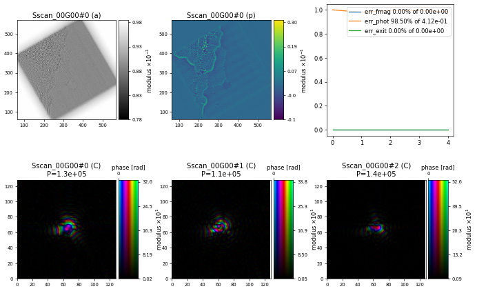

Starting From a Previous Reconstruction
Contents
12. Starting From a Previous Reconstruction#
Learning how to start refinement from an existing reconstruction and use this strategy to reconstruct a large electron ptychography datasets.
In this example, we are going to reconstruct the full graphene data set from ePSIC a subsection of which was already used in Working With Electron Data. The goal is to do a few iterations of ePIE to find a reasonable probe/object followed by refinement using the maximum-likelihood (ML) engine. Unfortunately, there are a few incompatibilies between these two engines in PtyPy namely that ePIE requires data to be loaded in a single block whereas ML is fine with smaller block sizes. So, instead of simply chaining the engines we can first run ePIE, save the results to a .ptyr file and then load the initial ePIE reconstruction into a separate ML script. This way, we can use different data loading parameters for the two parts of the reconstructions and also make use of the multi-GPU capabilities of the ML engine (ePIE by design needs to run in a single GPU instance).
12.1. The data#
At the ePSIC instrument at the Diamond Light Source, raw data is written into HDF5 files. In this example, we are looking at the graphene data stored in "dls_epsic_80kV_graphene/20200130_163208.h5" and inspect the relevant entry
import h5py, os
tutorial_data_home = "../../data/"
dataset = "dls_epsic_80kV_graphene/20200130_163208.h5"
path_to_data = os.path.join(tutorial_data_home, dataset)
with h5py.File(path_to_data) as f:
keys = ["data/frames"]
print("The file {} has the following relevant entries: \n".format(path_to_data))
print('\n'.join('\t* {0:<30} shape = {1:}'.format(k,f[k].shape) for k in keys))
for the diffraction intensities
The file ../../data/dls_epsic_80kV_graphene/20200130_163208.h5 has the following relevant entries:
* data/frames shape = (65025, 128, 128)
In addition, we have been provided with some meta information (which is also stored in an HDF5 files for more recent data collections at ePSIC), namely
scan roration: 60 degrees
scan step size: 3.71875e-11 m
nr. of scan positions: 255 x 255
electron energy: 80 kV
detector pixelsize: 220 um (4x binning, original frames are 512x512 with 55 um pixelsize)
detector distance: 0.1732 m
import h5py, os
tutorial_data_home = "../../data/"
dataset = "dls_epsic_80kV_graphene/20200130_163208.h5"
path_to_data = os.path.join(tutorial_data_home, dataset)
with h5py.File(path_to_data) as f:
keys = ["data/frames"]
print("The file {} has the following relevant entries: \n".format(path_to_data))
print('\n'.join('\t* {0:<30} shape = {1:}'.format(k,f[k].shape) for k in keys))
12.2. Loading the data#
Since we have only been provided with diffraction intensities and meta information, but no explicit scan positions, we need to use a custom EpsicHdf5Loader that has been created specifically for the ePSIC instrument by subclassing the Hdf5Loader to make the relevant calculation of e.g. the scan positons based on the given meta information. We first need to import this new PtyScan module
ptypy.load_ptyscan_module("epsic_loader")
specify the loader class
p.scans.scan_00.data = u.Param()
p.scans.scan_00.data.name = 'EpsicHdf5Loader'
p.scans.scan_00.data.orientation = 2
provide the correct path to the intensities
p.scans.scan_00.data.intensities = u.Param()
p.scans.scan_00.data.intensities.file = path_to_data
p.scans.scan_00.data.intensities.key = "data/frames"
provide information about the scan parameters
p.scans.scan_00.data.rotation = 60
p.scans.scan_00.data.stepsize = 3.71875e-11
p.scans.scan_00.data.numpos = 255
and other relevant meta information on the energy and detector distance/psize
p.scans.scan_00.data.electron_data = True
p.scans.scan_00.data.psize = 220e-6
p.scans.scan_00.data.energy = 80
p.scans.scan_00.data.distance = 0.1732
12.3. The scan model#
As the scan model, we should in principle use the GradFull model which is preferable for ePIE reconstruction since it does not create the exit wave buffers. However, even though we want to read all the data in a single block of frames, we should still use the BlockGradFull model but with frames_per_block larger than the total nr. of frames. That is because in their current implementation, the block scan models are more efficient when loading data into PtyPy compare to the regular Full models.
# Make sure bigger than nr. of frames
# because of ePIE
p.frames_per_block = 100000
p.scans = u.Param()
p.scans.scan_00 = u.Param()
p.scans.scan_00.name = 'BlockGradFull'
12.4. Initial ePIE reconstruction#
For ePIE, we use the same set of parameters as before with alpha=0.9, beta=0.1 and object_norm_is_global=True
p.engines = u.Param()
p.engines.engine = u.Param()
p.engines.engine.name = "EPIE_pycuda"
p.engines.engine.numiter = 5
p.engines.engine.numiter_contiguous = 1
p.engines.engine.alpha = 0.9
p.engines.engine.beta = 0.1
p.engines.engine.object_norm_is_global = True
p.engines.engine.probe_support = None
p.engines.engine.probe_fourier_support = None
p.engines.engine.probe_update_start = 0
p.engines.engine.record_local_error = False
resulting in the following initial reconstruction after \(5\) iterations of ePIE

import ptypy, os
import ptypy.utils as u
# This will import the EpsicHdf5Loader class
ptypy.load_ptyscan_module("epsic_loader")
# This will import the GPU engines
ptypy.load_gpu_engines("cuda")
# Root directory of tutorial data
tutorial_data_home = "../../data/"
# Dataset for this tutorial
dataset = "dls_epsic_80kV_graphene/20200130_163208.h5"
# Absolute path to HDF5 file with raw data
path_to_data = os.path.join(tutorial_data_home, dataset)
# Create parameter tree
p = u.Param()
# Set verbose level to info
p.verbose_level = "interactive"
# Scan label
p.run = "dls_epsic_graphene"
# Make sure bigger than nr. of frames
# because of ePIE
p.frames_per_block = 100000
# Set io settings (no files saved)
p.io = u.Param()
p.io.home = "./"
p.io.rfile = "recons/%(run)s_%(engine)s_%(iterations)04d.ptyr"
p.io.autosave = u.Param(active=False)
p.io.interaction = u.Param(active=False)
# Live-plotting during the reconstruction
p.io.autoplot = u.Param()
p.io.autoplot.active=True
p.io.autoplot.threaded = False
p.io.autoplot.layout = "jupyter"
p.io.autoplot.interval = 1
# Define the scan model
p.scans = u.Param()
p.scans.scan_00 = u.Param()
p.scans.scan_00.name = 'BlockGradFull'
# Initial illumination (based on simulated optics)
p.scans.scan_00.illumination = u.Param()
p.scans.scan_00.illumination.model = None
p.scans.scan_00.illumination.photons = None
p.scans.scan_00.illumination.aperture = u.Param()
p.scans.scan_00.illumination.aperture.form = "circ"
p.scans.scan_00.illumination.aperture.size = 0.011
p.scans.scan_00.illumination.propagation = u.Param()
p.scans.scan_00.illumination.propagation.focussed = 0.1732
p.scans.scan_00.illumination.propagation.parallel = -1.5e-8
p.scans.scan_00.illumination.diversity = u.Param()
p.scans.scan_00.illumination.diversity.power = 0.1
p.scans.scan_00.illumination.diversity.noise = [0.5,0.2]
# Initial object
p.scans.scan_00.sample = u.Param()
p.scans.scan_00.sample.model = None
p.scans.scan_00.sample.diversity = None
p.scans.scan_00.sample.process = None
# Coherence parameters (modes)
p.scans.scan_00.coherence = u.Param()
p.scans.scan_00.coherence.num_probe_modes = 3
p.scans.scan_00.coherence.num_object_modes = 1
# Data loader
p.scans.scan_00.data = u.Param()
p.scans.scan_00.data.name = 'EpsicHdf5Loader'
p.scans.scan_00.data.orientation = 2
# Read diffraction data
p.scans.scan_00.data.intensities = u.Param()
p.scans.scan_00.data.intensities.file = path_to_data
p.scans.scan_00.data.intensities.key = "data/frames"
# Scan positions
p.scans.scan_00.data.rotation = 60
p.scans.scan_00.data.stepsize = 3.71875e-11
p.scans.scan_00.data.numpos = 255
# p.scans.scan_00.data.positions = u.Param()
# p.scans.scan_00.data.positions.bounding_box = u.Param()
# p.scans.scan_00.data.positions.bounding_box.fast_axis_bounds = [50,200]
# p.scans.scan_00.data.positions.bounding_box.slow_axis_bounds = [50,200]
# Meta information
# electron_data needs to be set to True
# if energy is given as electron energy in kV
p.scans.scan_00.data.electron_data = True
p.scans.scan_00.data.psize = 220e-6
p.scans.scan_00.data.energy = 80
p.scans.scan_00.data.distance = 0.1732
# Read detector mask
# p.scans.scan_00.data.mask = u.Param()
# p.scans.scan_00.data.mask.file = path_to_data
# p.scans.scan_00.data.mask.key = "data/mask"
# p.scans.scan_00.data.mask.invert = True
# Determine diffraction center from the data
p.scans.scan_00.data.auto_center = True
# Reconstruct using GPU-accelerated ePIE
p.engines = u.Param()
p.engines.engine = u.Param()
p.engines.engine.name = "EPIE_pycuda"
p.engines.engine.numiter = 5
p.engines.engine.numiter_contiguous = 1
p.engines.engine.alpha = 0.9
p.engines.engine.beta = 0.1
p.engines.engine.object_norm_is_global = True
p.engines.engine.probe_support = None
p.engines.engine.probe_fourier_support = None
p.engines.engine.probe_update_start = 0
p.engines.engine.record_local_error = False
# Run reconstruction
P = ptypy.core.Ptycho(p,level=5)
12.5. Refinement using maximum likelihood (ML) engine#
For the second part of the reconstruction, we use the same block scan model (BlockGradFull) since ML also does not require any exit wave buffers, but with a smaller block size
p.frames_per_block = 4000
to actually load the data in blocks. We also need to load the previous results of the ePIE reconstruction as a starting guess for probe
p.scans.scan_00.illumination = u.Param()
p.scans.scan_00.illumination.photons = None
p.scans.scan_00.illumination.model = "recon"
p.scans.scan_00.illumination.recon = u.Param()
p.scans.scan_00.illumination.recon.rfile = "./recons/dls_epsic_graphene_EPIE_pycuda_0005.ptyr"
p.scans.scan_00.illumination.aperture = u.Param()
p.scans.scan_00.illumination.aperture.form = None
p.scans.scan_00.illumination.diversity = None
and object
p.scans.scan_00.sample = u.Param()
p.scans.scan_00.sample.model = "recon"
p.scans.scan_00.sample.recon = u.Param()
p.scans.scan_00.sample.recon.rfile = "./recons/dls_epsic_graphene_EPIE_pycuda_0005.ptyr"
p.scans.scan_00.sample.diversity = None
p.scans.scan_00.sample.process = None
and provide standard ML engine parameters
p.engines = u.Param()
p.engines.engine = u.Param()
p.engines.engine.name = "ML_pycuda"
p.engines.engine.numiter = 195
p.engines.engine.numiter_contiguous = 1
p.engines.engine.ML_type = "Gaussian"
p.engines.engine.reg_del2 = True
p.engines.engine.reg_del2_amplitude = 0.001
p.engines.engine.scale_precond = True
p.engines.engine.floating_intensities = False
p.engines.engine.probe_update_start = 0
Finally, we save the parameter into a config file: ./config/dls_epsic_graphene_refine.yaml, write a Python run script
with open("./ptypy_run_dls_epsic_graphene_refine.py", "w") as f:
f.write("""\
import ptypy
ptypy.load_ptyscan_module("epsic_loader")
ptypy.load_gpu_engines("cuda")
p = ptypy.utils.param_from_yaml("config/dls_epsic_graphene_refine.yaml")
P = ptypy.core.Ptycho(p,level=5)
""")
and execute the ML refinement in a new terminal using 4 GPUs
cd $HOME/tutorials/notebooks/10_13_Processing_Large_Datasets
srun -n 4 -c 2 --gpus-per-task=1 --gpu-bin=None python ptypy_run_dls_epsic_graphene_refine.py
Exercise
Run the ePSIC graphene ML refinement script in a terminal using 4 GPUs and compare the output against the initial ePIE reconstruction.
with open("./ptypy_run_dls_epsic_graphene_refine.py", "w") as f:
f.write("""\
import ptypy
ptypy.load_ptyscan_module("epsic_loader")
ptypy.load_gpu_engines("cuda")
p = ptypy.utils.param_from_yaml("config/dls_epsic_graphene_refine.yaml")
P = ptypy.core.Ptycho(p,level=5)
""")
import ptypy.utils.plot_client as pc
fig1 = pc.figure_from_ptycho(P)
fig1.savefig("./recons_after_epie.png", dpi=300)
fig2 = pc.figure_from_ptyr("./recons/dls_epsic_graphene_ML_pycuda_0100.ptyr")
fig2.savefig("./recons_after_epie_ml.png", dpi=300)
Tip
Save the figures in a PNG file with high resolution (dpi=300) and open via file browser to inspect features in different reconstructions.